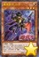
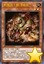
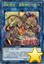

以下是可以在118.178.111.167 23333端口使用的先行卡的列表。下载补丁后即可使用。
使用方法：原版游戏下载补丁后解压至游戏文件夹，YGOMobile请自定义数据库（方法请查看压缩包内使用说明），暂不保证对其他版本的支持。
资料来源：任天堂世界论坛。
脚本作者：ygopro-pre-script，YGOPRO。目前所有脚本来自于以上这2个项目，在此对各自的贡献者表示感谢。
版权声明：转载请注明出自本页面，并完整保留附带的使用说明文档。如果您想对本项目进行修改，请移步这里，但我们建议您直接参与官方项目ygopro-pre-script。
星星和加号图标是Yusuke Kamiyamane的作品。
更新记录
- 2017-07-15 01:55
- 修复：地底恐魔 巨魔的妖魔特殊召唤数量错误的问题。
- 2017-07-15 01:34
- 修复：秘旋谍 双螺旋搭档无法发动效果的问题。
- 2017-07-15 01:27
- 修复：星遗物的傀儡不能改变表示形式的问题。
- 2017-07-15 00:44
- 新卡：近期公布新卡。
- 修复：略。
- 2017-06-21 22:41
- 新卡：颉颃胜负。
- 修复：影六武众-玄蕃能回收魔法·陷阱卡的问题。
- 修复：星遗物-『星铠』①效果发动次数无限的问题，和③效果会被卡时点的问题。
- 修复：幻变骚灵协议会使场上以外的卡的发动不能被无效的问题。
- 修复：部分永续陷阱卡发动时提示问号的问题。
- 2017-06-21 11:39
- 修复：超机怪虫·圣言神经元虫没有连接箭头的问题。
- 修复：非对称玄化对方回合效果无法发动的问题。
- 修复：机龙衍生物报错的问题。
- 2017-06-21 01:45
- 新卡：近期公布新卡35张。
- 修复：待补充。
- 2017-06-08 21:49
- 修复：根据调整，真红眼铁骑士-基亚·弗里德①效果在伤害步骤可以发动。
- 2017-06-08 21:42
- 修复：炎王兽 甘尼许①效果伤害步骤不能发动的问题。
- 2017-06-08 13:19
- 修复：刚鬼 头锤蝙蝠未被标记为「刚鬼」卡的问题。
- 修复：淘气仙星·斯威特戴薇儿①效果无效的问题。
- 修复：导爆线无法发动的问题。
- 2017-06-08 01:44
- 修复：刚鬼 雷霆食人魔无法使用的问题。但①效果暂未限制召唤到的格子。
- 2017-06-08 01:06
- 新卡：近期发售和公布新卡9张。
- 修复：白棘魟特殊召唤条件错误的问题。
- 修复：DDD 超视王 零·麦克斯韦不能下降自己怪兽守备力的问题。
- 修复：嗅探龙发动次数无限的问题。
- 修复：玄化海龙 泰达路斯会除外特殊召唤的里侧表示怪兽的问题。
- 修复：更新装弹枪管龙的处理，但仍然需要使用替罪羊中断攻击。
- 修复：玄化次元在卡里侧表示除外的场合也会触发②效果的问题。
- 2017-05-23 20:59
- 修复：强行修复装弹枪管龙转移控制权后仍然会继续进行伤害计算的问题。
- 2017-05-23 20:26
- 修复：白棘魟特殊召唤报错的问题。
- 修复：临时使娱乐伙伴 异色眼同调士可以从灵摆区域特殊召唤任意怪兽，但特殊召唤后不能进行同调召唤的场合两只怪兽都会被除外。
- 2017-05-23 16:12
- 修复：装弹枪管龙③效果不能发动的问题。
- 2017-05-23 15:04
- 修复：双三角龙连接素材错误的问题。
- 修复：玄化因子不用解放召唤的怪兽不会被除外的问题。
- 2017-05-23 14:42
- 修复：虚空俏丽魔术师部分情况下不能连接召唤的问题。
- 修复：娱乐伙伴 异色眼融解者怪兽效果不能融合召唤的问题。
- 2017-05-23 14:05
- 修复：超级交通机人-移动基地未被标记为「交通机人」卡的问题。
- 修复：爆竹抽卡只抽1张的问题。
- 2017-05-23 13:54
- 修复：麻醉弹丸龙①效果无法发动的问题。
- 修复：水精鳞-深渊海仙女①效果无法发动的问题。
- 修复：装弹枪管龙的处理。
- 修复：虚空俏丽魔术师②效果无效的问题。
- 修复：霸王紫龙 异色眼猛毒龙①效果无法发动的问题。
- 修复：电子界工具未被标记为「零件」（原齿轮）系列的问题。
- 2017-05-23 01:56
- 修复：超重武者 御助-K在怪兽直接攻击时报错的问题。
- 修复：虚空俏丽魔术师②效果无法发动的问题。
- 2017-05-23 01:27
- 修复：「电子暗黑」魔法卡不被识别的问题。
- 2017-05-23 00:50
- 修复：时械巫女不识别部分「时械神」卡的问题。
- 2017-05-23 00:40
- 新卡：近期发售和公布新卡49张。
- 更新：部分卡片更换为正式密码。
- 修复：部分BUG。
- 2017-05-02 21:00
- 修复：DDD 超死伟王 白地狱终末神效果报错的问题。
- 修复：DDD 超死伟王 紫地狱终末神对方怪兽直接攻击时报错的问题。
- 2017-05-01 23:36
- 修复：潜海奇袭保护里侧表示魔法·陷阱卡的问题。
- 2017-05-01 22:42
- 修复：娱乐伙伴 五虹之魔术师可以从手牌灵摆召唤的问题。
- 修复：DDD 超死伟王 白地狱终末神在怪兽特殊召唤时不触发效果的问题。
- 修复：亚马逊斥候把卡回到卡组后不洗牌的问题。
- 修复：亚马逊王女③效果不能被神之警告对应的问题。
- 修复：DDD 超死伟王 紫地狱终末神在自己怪兽被攻击时不能发动灵摆效果的问题。
- 修复：黄昏之双龙无法发动的问题。
- 2017-05-01 12:41
- 修复：临时修复地底恐魔 最终决战没有提示文本的问题。
- 2017-05-01 12:33
- 修复：地底恐魔新卡未被标记为「地底恐魔 巨魔」卡的问题。
- 2017-05-01 01:23
- 新卡：近期公布新卡6张。
- 更新：部分卡片更换为正式密码。
- 更新：优化全部卡图。
- 更新：更换打包方式。
卡片列表
| 卡图 | 卡名 | 效果 |
|---|---|---|
 | 白棘魟 | [怪兽|效果] 鱼/水 [★4] 1400/1000 这个卡名的作为①的方法的特殊召唤1回合只能有1次，作为②的效果1回合只能使用1次。 ①：这张卡可以把手卡1只水属性怪兽丢弃，从手卡特殊召唤。 ②：这张卡从墓地的特殊召唤成功的场合才能发动。这个回合，这张卡当作调整使用。 |
 | DDD 超视王 零·麦克斯韦 | [怪兽|效果|灵摆] 恶魔/暗 [★7] 2800/2500 4/4 ←4 【灵摆】 4→ 这个卡名的灵摆效果1回合只能使用1次。 ①：以场上1只表侧表示怪兽为对象才能发动。那只怪兽的守备力直到回合结束时变成0。 【怪兽效果】 ①：这张卡向对方的守备表示怪兽攻击的伤害计算前才能发动。那只对方怪兽的守备力直到伤害步骤结束时变成0。 ②：这张卡向守备表示怪兽攻击的场合，给与攻击力超过那个守备力的数值的战斗伤害。 ③：这张卡的战斗发生的对自己的战斗伤害变成0。 |
| 电子界整流员 | [怪兽|效果] 电子界/光 [★2] 1000/1000 这个卡名的①的方法的特殊召唤1回合只能有1次。 ①：自己场上的怪兽只有电子界族怪兽的场合，这张卡可以从手卡特殊召唤。 ②：这张卡召唤成功时，以自己场上1只表侧表示怪兽为对象才能发动。那只怪兽的种族直到回合结束时变成电子界族。 | |
 | 电子界加速人 | [怪兽|效果|连接] 电子界/光 [LINK-3] 2000/- [←][→][↓] 衍生物以外的怪兽2只以上 这个卡名的效果1回合只能使用1次。 ①：自己·对方的战斗阶段可以以这张卡所连接区1只电子界族怪兽为对象从以下效果选择1个发动。这个效果发动的回合，这张卡不能攻击。 ●那只怪兽的攻击力直到回合结束时上升2000。 ●这个回合，那只怪兽在同1次的战斗阶段中最多2次可以向怪兽攻击。 |
 | 上弹龙 | [怪兽|效果|连接] 龙/暗 [LINK-2] 1800/- [←][→] 「弹丸」怪兽2只 这个卡名的①的效果1回合只能使用1次。 ①：以这张卡以外的自己场上1只连接怪兽为对象才能发动。从手卡把1只「弹丸」怪兽在作为那张卡所连接区的自己场上特殊召唤。这个效果特殊召唤的怪兽不能作为连接素材，结束阶段破坏。 ②：这张卡被战斗破坏送去墓地时，以自己墓地1只「弹丸」怪兽为对象才能发动。那只怪兽加入手卡。 |
 | 淘气仙星·布拉蒂玛丽 | [怪兽|效果|连接] 天使/光 [LINK-2] 2000/- [→][↙] 「淘气仙星」怪兽2只 这个卡名的②的效果1回合只能使用1次。 ①：只要这张卡在怪兽区域存在，每次这张卡所连接区有「淘气仙星」怪兽召唤·特殊召唤，自己回复200基本分。 ②：从手卡丢弃1张「淘气仙星」卡才能发动。双方玩家各自从卡组抽1张。这个效果的发动时自己基本分比对方多2000以上的场合，这个效果让自己抽出的数量变成2张。 |
| 刚鬼 毁灭食人魔 | [怪兽|效果|连接] 战士/地 [LINK-4] 2800/- [←][→][↙][↘] 「刚鬼」怪兽2只以上 这个卡名的②的效果1回合只能使用1次。 ①：这张卡所连接区的怪兽在1回合各有1次不会被战斗破坏。 ②：自己主要阶段才能发动。对方从自身墓地选最多2只怪兽特殊召唤。那之后，自己从自己墓地选最多有特殊召唤的怪兽数量的连接怪兽以外的「刚鬼」怪兽在这张卡所连接区特殊召唤。这个效果的发动后，直到回合结束时自己不是「刚鬼」怪兽不能特殊召唤。 | |
 | 天空圣骑士 阿克珀耳修斯 | [怪兽|效果] 天使/光 [★9] 2800/2300 ①：这张卡在手卡·墓地存在，自己把反击陷阱卡发动的场合或者自己把怪兽的效果·魔法·陷阱卡的发动无效的场合，从自己的手卡·场上·墓地把这张卡以外的2只天使族怪兽除外才能发动。这张卡特殊召唤。 ②：这张卡向守备表示怪兽攻击的场合，给与攻击力超过那个守备力的数值的战斗伤害。 ③：这张卡给与对方战斗伤害时才能发动。从卡组把1张「帕尔修斯」卡或者反击陷阱卡加入手卡。 |
 | 影六武众-风魔 | [怪兽|效果|调整] 战士/风 [★1] 200/1800 ①：这张卡被战斗·效果破坏的场合才能发动。从卡组把「影六武众-风魔」以外的1只「六武众」怪兽特殊召唤。 ②：只让自己场上的「六武众」怪兽1只被效果破坏的场合，可以作为代替把墓地的这张卡除外。 |
| 影六武众-玄蕃 | [怪兽|效果|调整] 战士/炎 [★2] 500/2100 ①：这张卡召唤成功时，以除外的1只自己的「六武众」怪兽为对象才能发动。那只怪兽加入手卡。 ②：只让自己场上的「六武众」怪兽1只被效果破坏的场合，可以作为代替把墓地的这张卡除外。 | |
 | 影六武众-初芽 | [怪兽|效果] 战士/水 [★3] 1600/1500 这个卡名的①的效果1回合只能使用1次。 ①：从自己墓地以及自己场上的表侧表示怪兽之中把2只「六武众」怪兽除外，以「影六武众-初芽」以外的自己墓地1只「六武众」怪兽为对象才能发动。那只怪兽特殊召唤。 ②：只让自己场上的「六武众」怪兽1只被效果破坏的场合，可以作为代替把墓地的这张卡除外。 |
| 影六武众-道治 | [怪兽|效果] 战士/暗 [★4] 1700/1200 ①：这张卡已在怪兽区域存在的状态，自己场上有这张卡以外的「六武众」怪兽召唤·特殊召唤时才能发动。从卡组把1张「六武众」卡送去墓地。 ②：只让自己场上的「六武众」怪兽1只被效果破坏的场合，可以作为代替把墓地的这张卡除外。 | |
 | 影六武众-木猿 | [怪兽|效果] 战士/地 [★4] 1900/1000 ①：这张卡特殊召唤成功时才能发动。自己场上存在的属性以外的1只「六武众」怪兽从卡组加入手卡。 ②：只让自己场上的「六武众」怪兽1只被效果破坏的场合，可以作为代替把墓地的这张卡除外。 |
| 影六武众-理伴 | [怪兽|效果|融合] 战士/光 [★5] 2400/2400 属性不同的「六武众」怪兽×3 把自己场上的上记卡送去墓地的场合才能从额外卡组特殊召唤（不需要「融合」）。这张卡不能作为融合素材。 ①：1回合1次，从手卡以及自己场上的表侧表示的卡之中把1张「六武众」卡除外，以场上1张卡为对象才能发动。那张卡除外。 ②：自己场上的「六武众」怪兽被战斗·效果破坏的场合，可以作为代替把墓地的这张卡除外。 | |
 | 六武众的影忍术 | [魔法|速攻] 这个卡名的卡在1回合只能发动1张。 ①：把自己场上1只怪兽送去墓地，以除外的1只自己的「六武众」怪兽为对象才能发动。那只怪兽特殊召唤。 |
 | 忍之六武 | [陷阱] ①：自己场上有「六武众」怪兽6只存在，那些属性全部不同的场合才能发动。下次的对方回合跳过。 |
| 魔弹射手 卡斯帕 | [怪兽|效果] 恶魔/光 [★3] 1200/1200 这个卡名的②的效果1回合只能使用1次。 ①：只要这张卡在怪兽区域存在，自己·对方回合自己可以把「魔弹」魔法·陷阱卡从手卡发动。 ②：和这张卡相同纵列有魔法·陷阱卡发动的场合才能发动。和那张发动的卡卡名不同的1张「魔弹」卡从卡组加入手卡。 | |
 | 魔弹射手 医生 | [怪兽|效果] 恶魔/光 [★3] 1400/1200 这个卡名的②的效果1回合只能使用1次。 ①：只要这张卡在怪兽区域存在，自己·对方回合自己可以把「魔弹」魔法·陷阱卡从手卡发动。 ②：和这张卡相同纵列有魔法·陷阱卡发动的场合才能发动。从自己墓地选和那张发动的卡卡名不同的1张「魔弹」卡加入手卡。 |
|  | 魔弹射手 小子 | [怪兽|效果] 恶魔/光 [★3] 1600/200 这个卡名的②的效果1回合只能使用1次。 ①：只要这张卡在怪兽区域存在，自己·对方回合自己可以把「魔弹」魔法·陷阱卡从手卡发动。 ②：和这张卡相同纵列有魔法·陷阱卡发动的场合，从手卡丢弃1张「魔弹」卡才能发动。自己从卡组抽2张。 |
 | 魔弹射手 斯塔尔 | [怪兽|效果] 恶魔/光 [★4] 1300/1700 这个卡名的②的效果1回合只能使用1次。 ①：只要这张卡在怪兽区域存在，自己·对方回合自己可以把「魔弾」魔法·陷阱卡从手卡发动。 ②：和这张卡相同纵列有魔法·陷阱卡发动的场合才能发动。从卡组把「魔弾の射手 スター」以外的1只4星以下的「魔弾」怪兽守备表示特殊召唤。 |
 | 魔弹射手 灾星 | [怪兽|效果] 恶魔/光 [★4] 1500/1300 这个卡名的②的效果1回合只能使用1次。 ①：只要这张卡在怪兽区域存在，自己·对方回合自己可以把「魔弹」魔法·陷阱卡从手卡发动。 ②：和这张卡相同纵列有魔法·陷阱卡发动的场合，以自己墓地1只「魔弹」怪兽为对象才能发动。那只怪兽守备表示特殊召唤。 |
| 魔弹恶魔 萨米尔 | [怪兽|效果] 恶魔/光 [★8] 2500/2500 这张卡可以把1只「魔弹」怪兽解放表侧表示上级召唤。这个卡名的②的效果1回合只能使用1次。 ①：只要这张卡在怪兽区域存在，自己·对方回合自己可以把「魔弹」魔法·陷阱卡从手卡发动。 ②：对方结束阶段才能发动。自己从卡组抽出这个回合这张卡表侧表示存在期间自己发动的「魔弹」魔法·陷阱卡的数量。 | |
 | 魔弹-无尽内啡肽 | [魔法|速攻] 这个卡名的卡在1回合只能发动1张。 ①：以自己场上1只「魔弹」怪兽为对象才能发动。那只怪兽的攻击力·守备力直到回合结束时变成原本数值的2倍。这张卡发动的回合，作为对象的怪兽不能直接攻击。 |
 | 魔弹-交叉统治者 | [魔法|速攻] 这个卡名的卡在1回合只能发动1张。 ①：自己场上有「魔弹」怪兽存在的场合，以场上1只表侧表示怪兽为对象才能发动。直到回合结束时，那只怪兽的攻击力·守备力变成0，效果无效化。 |
| 魔弹-亡命之徒 | [陷阱] 这个卡名的卡在1回合只能发动1张。 ①：自己场上有「魔弹」怪兽存在的场合，以场上1张表侧表示的卡为对象才能发动。那张卡破坏。 | |
 | 魔弹-恶魔交易 | [陷阱|永续] 这个卡名的卡在1回合只能发动1张。 ①：只要这张卡在魔法与陷阱区域存在，自己场上的「魔弹」怪兽不会被效果破坏。 ②：这张卡被对方的效果送去墓地的场合才能发动。从自己的卡组·墓地选「魔弹-恶魔交易」以外的1张「魔弹」卡加入手卡。 |
 | 雪天气 浅天蓝 | [怪兽|效果] 天使/地 [★3] 0/2200 这个卡名的①的效果1回合只能使用1次。 ①：这张卡召唤成功时才能发动。从卡组选1张「天气」魔法·陷阱卡在自己的魔法与陷阱区域表侧表示放置。 ②：场上的这张卡为让「天气」卡的效果发动而被除外的场合，下个回合的准备阶段才能发动。除外的这张卡特殊召唤。 |
| 雨天气 天蓝 | [怪兽|效果] 天使/水 [★3] 1200/1400 这个卡名的①的效果1回合只能使用1次。 ①：这张卡特殊召唤成功的场合才能发动。从手卡选1张「天气」魔法·陷阱卡在自己的魔法与陷阱区域表侧表示放置。 ②：场上的这张卡为让「天气」卡的效果发动而被除外的场合，下个回合的准备阶段才能发动。除外的这张卡特殊召唤。 | |
 | 虹天气 彩虹 | [怪兽|效果|连接] 天使/光 [LINK-3] 2400/- [↙][↓][↘] 「天气」怪兽3只 ①：这张卡所连接区的「天气」效果怪兽得到以下效果。 ●魔法·陷阱·怪兽的效果发动时，把这张卡除外才能发动。那个发动无效并破坏。 ②：对方把怪兽特殊召唤之际，把连接召唤的这张卡送去墓地才能发动。那次特殊召唤无效，那些怪兽破坏。 ③：场上的这张卡为让「天气」卡的效果发动而被除外的场合，下个回合的准备阶段才能发动。除外的这张卡特殊召唤。 |
 | 雨之天气模样 | [魔法|永续] ①：「雨之天气模样」在自己场上只能有1张表侧表示存在。 ②：和这张卡相同纵列的自己的主要怪兽区域以及那些两邻的自己的主要怪兽区域存在的「天气」效果怪兽得到以下效果。 ●把这张卡除外，以对方场上1张魔法·陷阱卡为对象才能发动。那张卡回到持有者手卡。这个效果在对方回合也能发动。 |
 | 阴之天气模样 | [魔法|永续] ①：「阴之天气模样」在自己场上只能有1张表侧表示存在。 ②：和这张卡相同纵列的自己的主要怪兽区域以及那些两邻的自己的主要怪兽区域存在的「天气」效果怪兽得到以下效果。 ●把这张卡除外，以场上1只表侧表示怪兽为对象才能发动。这个回合，那只怪兽的攻击力变成一半，可以直接攻击。这个效果在伤害步骤不能发动，对方回合也能发动。 |
 | 雷之天气模样 | [陷阱|永续] ①：「雷之天气模样」在自己场上只能有1张表侧表示存在。 ②：和这张卡相同纵列的自己的主要怪兽区域以及那些两邻的自己的主要怪兽区域存在的「天气」效果怪兽得到以下效果。 ●这张卡和对方怪兽进行战斗的伤害步骤开始时，把这张卡除外才能发动。那只对方怪兽回到持有者手卡。 |
| 极光之天气模样 | [陷阱|永续] ①：「极光之天气模样」在自己场上只能有1张表侧表示存在。 ②：和这张卡相同纵列的自己的主要怪兽区域以及那些两邻的自己的主要怪兽区域存在的「天气」效果怪兽得到以下效果。 ●只让卡1张加入自己或者对方的手卡时，把这张卡除外才能发动。加入手卡的那张卡除外，那个玩家从卡组抽1张。 | |
 | 地底恐魔 巨魔的妖魔 | [怪兽|效果|连接] 幻龙/地 [LINK-2] 2000/- [↙][↘] 反转怪兽2只 这个卡名的②的效果1回合只能使用1次。 ①：这张卡的攻击力上升作为这张卡的连接素材的「地底恐魔」怪兽的原本等级合计×100。 ②：自己主要阶段才能发动。从卡组把1只反转怪兽送去墓地，从手卡把1只怪兽在这张卡所连接区里侧守备表示特殊召唤。 ③：1回合1次，这张卡所连接区的怪兽反转的场合发动。从自己的卡组·墓地选1只反转怪兽加入手卡。 （注：译名并非来自NW） |
| 秘旋谍 双螺旋搭档 | [怪兽|效果|连接] 战士/地 [LINK-2] 1900/- [←][↓] 「秘旋谍」怪兽2只 这个卡名的②的效果1回合只能使用1次。 ①：这张卡的卡名只要在场上·墓地存在当作「秘旋谍 超级特工」使用。 ②：宣言卡的种类（怪兽·魔法·陷阱）才能发动。把对方卡组最上面的卡给双方确认，宣言的种类的卡的场合，从自己的卡组·墓地选1只「秘旋谍」怪兽加入手卡或在作为这张卡所连接区的自己场上特殊召唤。 （注：译名并非来自NW） | |
| 电容跟踪杀人蝎 | [怪兽|效果] 电子界/光 [★5] 2000/1000 这个卡名的②的效果1回合只能使用1次。 ①：这张卡召唤成功时，以这张卡以外的自己场上1只电子界族怪兽为对象才能发动。这只怪兽表侧表示存在期间，那只怪兽的攻击力上升800。 ②：怪兽区域的这张卡被效果破坏送去墓地的场合发动。双方玩家受到800伤害。 | |
| 连接设施飞行员 | [怪兽|效果] 电子界/风 [★2] 0/1800 这个卡名的①的方法的特殊召唤1回合只能有1次。 ①：这张卡可以从手卡往作为场上的连接怪兽所连接区的自己场上特殊召唤。 | |
| 淘气仙星·那耳姬丝 | [怪兽|效果] 天使/光 [★4] 1000/1800 这个卡名的①的效果1回合只能使用1次。 ①：对方受到效果伤害的场合才能发动。这张卡从手卡特殊召唤。 ②：只要这张卡在怪兽区域存在，每次对方把手卡·墓地的怪兽的效果发动，给与对方200伤害。 | |
| 暗黑安琪儿 | [怪兽|效果] 天使/暗 [★5] 0/0 ①：自己的天使族怪兽被选择作为攻击对象时，把那只怪兽解放，把这张卡从手卡送去墓地，以自己场上1只表侧表示怪兽为对象才能发动。攻击对象转移为那只自己怪兽，作为对象的怪兽的攻击力直到回合结束时上升解放的天使族怪兽的原本攻击力数值。 | |
| 刚鬼 头锤蝙蝠 | [怪兽|效果] 战士/地 [★2] 800/0 这个卡名的①②的效果1回合各能使用1次。 ①：这张卡在手卡的场合，把这张卡以外的1只「刚鬼」怪兽从手卡送去墓地，以自己场上1只「刚鬼」怪兽为对象才能发动。这张卡从手卡守备表示特殊召唤，作为对象的怪兽的攻击力直到回合结束时上升800。 ②：这张卡从场上送去墓地的场合才能发动。从卡组把「刚鬼 头锤蝙蝠」以外的1张「刚鬼」卡加入手卡。 | |
 | 关口龙 | [怪兽|效果] 龙/暗 [★4] 1600/1400 这个卡名的①的方法的特殊召唤1回合只能有1次。 ①：对方场上有连接怪兽存在的场合，这张卡可以从手卡特殊召唤。 ②：1回合1次，自己主要阶段才能发动。从手卡把1只4星以下的龙族·暗属性怪兽特殊召唤。 |
| 嗅探龙 | [怪兽|效果] 龙/暗 [★2] 800/400 这个卡名的效果1回合只能使用1次。 ①：这张卡召唤·特殊召唤成功的场合才能发动。从卡组把1只「嗅探龙」加入手卡。 | |
 | 麻醉弹丸龙 | [怪兽|效果] 龙/暗 [★1] 0/2200 这个卡名的①②的效果1回合各能使用1次。 ①：场上的这张卡为对象的连接怪兽的效果发动时才能发动。这张卡破坏。那之后，选场上1只表侧表示怪兽，那只怪兽不能攻击，效果无效化。 ②：场上的这张卡被战斗·效果破坏送去墓地的回合的结束阶段才能发动。从卡组把「麻醉弹丸龙」以外的1只「弹丸」怪兽特殊召唤。 |
 | 自动手枪弹丸龙 | [怪兽|效果] 龙/暗 [★3] 1600/1000 这个卡名的①②的效果1回合各能使用1次。 ①：场上的这张卡为对象的连接怪兽的效果发动时才能发动。这张卡破坏。那之后，选场上1张魔法·陷阱卡送去墓地。 ②：场上的这张卡被战斗·效果破坏送去墓地的回合的结束阶段才能发动。从卡组把「自动手枪弹丸龙」以外的1只「弹丸」怪兽特殊召唤。 |
 | 马格努姆弹丸龙 | [怪兽|效果] 龙/暗 [★4] 1800/1200 这个卡名的①②的效果1回合各能使用1次。 ①：场上的这张卡为对象的连接怪兽的效果发动时才能发动。这张卡破坏。那之后，选场上1只怪兽送去墓地。 ②：场上的这张卡被战斗·效果破坏送去墓地的回合的结束阶段才能发动。从卡组把「马格努姆弹丸龙」以外的1只「弹丸」怪兽特殊召唤。 |
| 幻变骚灵·网络傀儡师 | [怪兽|效果] 魔法师/光 [★4] 1600/1700 这个卡名的②的效果1回合只能使用1次。 ①：这张卡召唤成功时才能发动。从卡组选1张「幻变骚灵」陷阱卡在自己的魔法与陷阱区域盖放。 ②：以自己场上1张「幻变骚灵」卡和自己墓地1只「幻变骚灵」怪兽为对象才能发动。作为对象的场上的卡送去墓地，作为对象的墓地的怪兽特殊召唤。 | |
| 幻变骚灵·泛在羽衣精 | [怪兽|效果] 魔法师/风 [★2] 800/1500 这个卡名的①②的效果1回合各能使用1次。 ①：让这张卡以外的自己场上1张「幻变骚灵」卡回到持有者手卡，以对方场上1张卡为对象才能发动。那张卡回到持有者手卡。这个效果在对方回合也能发动。 ②：这张卡从场上送去墓地的场合，以自己墓地1张「幻变骚灵」陷阱卡为对象才能发动。那张卡加入手卡。 | |
| 幻变骚灵·寻道梅露辛 | [怪兽|效果] 魔法师/水 [★1] 500/300 这个卡名的③的效果1回合只能使用1次。 ①：这张卡可以直接攻击。 ②：这张卡给与对方战斗伤害时，以对方场上1张卡为对象才能发动。那张卡送去墓地。 ③：这张卡从场上送去墓地的场合才能发动。从卡组把「幻变骚灵·寻道梅露辛」以外的1只「幻变骚灵」怪兽加入手卡。 | |
| 幻变骚灵·查询昆提兰那克 | [怪兽|效果] 魔法师/地 [★5] 0/2400 ①：自己场上有「幻变骚灵」卡存在的场合，对方怪兽的攻击宣言时才能发动。这张卡从手卡特殊召唤，那次攻击无效。 ②：这张卡特殊召唤成功的场合，以对方场上1张表侧表示的卡为对象才能发动。这只怪兽表侧表示存在期间，那张卡的效果无效化。 | |
| 机怪虫·树突棘虫 | [怪兽|效果|反转] 昆虫/地 [★2] 300/2100 这个卡名的①②的效果1回合各能使用1次。 ①：这张卡反转的场合，以场上1只怪兽为对象才能发动。那只怪兽破坏。 ②：表侧表示的这张卡因对方的效果从场上离开的场合才能发动。「机怪虫·树突棘虫」以外的2只「机怪虫」怪兽从卡组里侧守备表示特殊召唤（同名卡最多1张）。 | |
| 机怪虫·轴突虫 | [怪兽|效果|反转] 昆虫/地 [★2] 500/1800 这个卡名的①②的效果1回合各能使用1次。 ①：这张卡反转的场合，以场上1张魔法·陷阱卡为对象才能发动。那张卡破坏。 ②：表侧表示的这张卡因对方的效果从场上离开的场合才能发动。「机怪虫·轴突虫」以外的2只「机怪虫」怪兽从卡组里侧守备表示特殊召唤（同名卡最多1张）。 | |
| 机怪虫·神经胶质虫 | [怪兽|效果|反转] 昆虫/地 [★2] 700/1500 这个卡名的①②的效果1回合各能使用1次。 ①：这张卡反转的场合才能发动。从自己的手卡·墓地选「机怪虫·神经胶质虫」以外的1只「机怪虫」怪兽表侧攻击表示或者里侧守备表示特殊召唤。 ②：表侧表示的这张卡因对方的效果从场上离开的场合才能发动。「机怪虫·神经胶质虫」以外的2只「机怪虫」怪兽从卡组里侧守备表示特殊召唤（同名卡最多1张）。 | |
| 机怪虫·受体虫 | [怪兽|效果|反转] 昆虫/地 [★2] 900/1200 这个卡名的①②的效果1回合各能使用1次。 ①：这张卡反转的场合才能发动。从卡组把1只「机怪虫」怪兽加入手卡。 ②：表侧表示的这张卡因对方的效果从场上离开的场合才能发动。「机怪虫·受体虫」以外的2只「机怪虫」怪兽从卡组里侧守备表示特殊召唤（同名卡最多1张）。 | |
|  | 机怪虫·郎飞结虫 | [怪兽|效果|反转] 昆虫/地 [★2] 1100/900 这个卡名的①②的效果1回合各能使用1次。 ①：这张卡反转的场合，以自己墓地最多2只「机怪虫」怪兽为对象才能发动。那些怪兽加入手卡。 ②：表侧表示的这张卡因对方的效果从场上离开的场合才能发动。「机怪虫·郎飞结虫」以外的2只「机怪虫」怪兽从卡组里侧守备表示特殊召唤（同名卡最多1张）。 |
| 机怪虫·树突虫 | [怪兽|效果|反转] 昆虫/地 [★2] 1300/600 这个卡名的①②的效果1回合各能使用1次。 ①：这张卡反转的场合才能发动。从卡组把1只怪兽送去墓地。 ②：表侧表示的这张卡因对方的效果从场上离开的场合才能发动。「机怪虫·树突虫」以外的2只「机怪虫」怪兽从卡组里侧守备表示特殊召唤（同名卡最多1张）。 | |
| 星遗物-『星铠』 | [怪兽|效果] 机械/暗 [★7] 2500/2500 这个卡名的①②③的效果1回合各能使用1次。 ①：怪兽反转召唤成功时才能发动。这张卡从手卡特殊召唤。 ②：这张卡召唤·特殊召唤成功的场合才能发动。从卡组把1张「星遗物」卡加入手卡。 ③：通常召唤的这张卡存在的场合，以从额外卡组特殊召唤的对方场上1只表侧表示怪兽为对象才能发动。那只怪兽和这张卡回到持有者手卡。这个效果在对方回合也能发动。 | |
 | 玄化神龙 末日龙 | [怪兽|效果|调整] 幻龙/光 [★4] 1500/1000 这个卡名的①②的效果1回合各能使用1次。 ①：这张卡召唤·特殊召唤成功的场合才能发动。从自己卡组上面把3张卡除外。这张卡的攻击力上升这个效果除外的「玄化」卡数量×300。 ②：这张卡给与对方战斗伤害时才能发动。从卡组把1只5星以上的「玄化」怪兽特殊召唤。这个效果特殊召唤的怪兽在下个回合的结束阶段除外。 |
 | 玄化海龙 泰达路斯 | [怪兽|效果] 幻龙/光 [★7] 2600/1500 ①：这张卡用「玄化」怪兽的效果特殊召唤成功的场合才能发动。这张卡以外的场上的特殊召唤的表侧表示怪兽全部除外。 ②：这张卡被除外的场合，下个回合的准备阶段让除外的这张卡回到卡组才能发动。从卡组把「玄化海龙 泰达路斯」以外的1张「玄化」卡除外。 |
| 玄化凤凰神 | [怪兽|效果] 幻龙/光 [★8] 2400/1600 ①：这张卡用「玄化」怪兽的效果特殊召唤成功的场合才能发动。场上盖放的魔法·陷阱卡全部除外。 ②：这张卡被除外的场合，下个回合的准备阶段让除外的这张卡回到卡组才能发动。从卡组把「玄化凤凰神」以外的1张「玄化」卡加入手卡。 | |
 | 玄化暴君龙 | [怪兽|效果] 幻龙/光 [★8] 2900/2500 ①：「玄化」怪兽的效果特殊召唤的这张卡不受陷阱卡的效果影响，可以在这张卡向怪兽攻击过的场合只再1次继续攻击。 ②：这张卡被除外的场合，下个回合的准备阶段让除外的这张卡回到卡组才能发动。从手卡把1只「玄化」怪兽特殊召唤。这个效果特殊召唤的怪兽在下个回合的结束阶段除外。 |
| 玄化执行神 | [怪兽|效果|特殊召唤] 幻龙/光 [★10] 3000/2500 这张卡不能通常召唤。从自己墓地以及自己场上的表侧表示的卡之中把「玄化」卡5种类各1张除外的场合才能特殊召唤。 ①：场上的这张卡不会被效果破坏，不能用效果除外。 ②：对方场上的卡数量比自己场上的卡多的场合，1回合1次，以除外的1只自己的「玄化」怪兽为对象才能发动。那只怪兽特殊召唤。这个效果特殊召唤的怪兽在下个回合的结束阶段除外。 | |
 | 水精鳞-深渊海仙女 | [怪兽|效果] 水/水 [★3] 1200/2000 这个卡名的①②的效果1回合各能使用1次。 ①：把这张卡从手卡丢弃，以自己场上1只水属性怪兽为对象才能发动。选那只怪兽以外的自己的手卡·场上1只水属性怪兽破坏，作为对象的怪兽的攻击力·守备力直到回合结束时上升这个效果破坏的怪兽的原本数值。这个效果在对方回合也能发动。 ②：这张卡从场上送去墓地的场合才能发动。自己从卡组抽1张，那之后选1张手卡丢弃。 |
| 炎王兽 甘尼许 | [怪兽|效果] 兽战士/炎 [★4] 1800/200 这个卡名的①②的效果1回合各能使用1次。 ①：这张卡在场上存在，怪兽的效果发动时才能发动。那个发动无效，选这张卡以外的自己的手卡·场上1只炎属性怪兽破坏。 ②：这张卡被破坏送去墓地的场合，以「炎王兽 甘尼许」以外的自己墓地1只炎属性的兽族·兽战士族·鸟兽族怪兽为对象才能发动。那只怪兽特殊召唤。那只特殊召唤的怪兽的效果无效化，结束阶段破坏。 | |
| 幻兽机 雷电貂 | [怪兽|效果] 机械/风 [★4] 1500/1500 ①：丢弃1张手卡才能发动。在自己场上把1只「幻兽机衍生物」（机械族·风·3星·攻/守0）特殊召唤。这个效果的发动后，直到回合结束时自己不是「幻兽机」怪兽不能作为融合·同调·超量·连接召唤的素材。 ②：这张卡的等级上升自己场上的「幻兽机衍生物」的等级的合计数值。 ③：只要自己场上有衍生物存在，这张卡不会被战斗·效果破坏。 | |
| 累加器人 | [怪兽|效果] 雷/光 [★1] 0/0 ①：这张卡的攻击力上升场上的连接怪兽的连接标记数量×300。 | |
| 兵队龙 | [怪兽|效果] 龙/地 [★2] 700/800 ①：1回合1次，对方把魔法·陷阱·怪兽的效果发动时才能发动。从卡组把1只2星以下的龙族怪兽特殊召唤。 | |
| 假威鸭 | [怪兽|效果|二重] 鸟兽/水 [★1] 0/0 ①：这张卡只要在场上·墓地存在，当作通常怪兽使用。 ②：可以把场上的当作通常怪兽使用的这张卡作为通常召唤作再1次召唤。那个场合这张卡变成当作效果怪兽使用并得到以下效果。 ●这张卡不会成为效果的对象，不会被效果破坏。 ●只要这张卡在怪兽区域存在，对方怪兽的攻击全部变成直接攻击。 | |
| 比翼连鳞 | [怪兽|效果|同盟] 龙/暗 [★3] 1500/0 ①：1回合1次，可以从以下效果选择1个发动。 ●以自己场上1只表侧表示怪兽为对象，把这张卡当作装备卡使用给那只怪兽装备。装备怪兽被战斗·效果破坏的场合，作为代替把这张卡破坏。 ●装备的这张卡特殊召唤。 ②：装备怪兽的原本攻击力变成1000，同1次的战斗阶段中可以作2次攻击。 | |
| 自爆蚁 | [怪兽|效果|反转] 昆虫/地 [★3] 1500/1000 这个卡名的①②的效果1回合各能使用1次。 ①：这张卡反转的场合发动。双方玩家受到1000伤害。 ②：这张卡被战斗·效果破坏送去墓地的场合发动。给与对方1000伤害。 | |
| 天岩户 | [怪兽|效果|灵魂] 岩石/地 [★4] 1900/1200 这张卡不能特殊召唤。 ①：只要这张卡在怪兽区域存在，双方不能把灵魂怪兽以外的怪兽的效果发动。 ②：这张卡召唤·反转的回合的结束阶段发动。这张卡回到持有者手卡。 | |
| 旋风机 风神电子人 | [怪兽|效果] 机械/风 [★5] 2200/2200 这张卡表侧表示上级召唤的场合解放的怪兽不送去墓地回到持有者手卡。 ①：1回合1次，丢弃1张手卡才能发动。和这张卡相同纵列的对方场上的卡全部回到持有者手卡。 | |
| 亡龙之战栗-死欲龙 | [怪兽|效果|调整] 龙/暗 [★7] 1000/3000 这个卡名的效果1回合只能使用1次。 ①：这张卡在手卡·墓地存在的场合，把基本分支付一半，以自己场上1只6星以下的怪兽为对象才能发动。这张卡特殊召唤。这个效果特殊召唤的这张卡等级下降作为对象的怪兽的等级数值，从场上离开的场合回到持有者卡组最下面。 | |
| 精灵神后 树精 | [怪兽|效果|特殊召唤] 魔法师/光 [★9] 0/0 这张卡不能通常召唤。自己·对方的墓地的怪兽属性是6种类以上的场合才能特殊召唤。 ①：这张卡的攻击力·守备力上升自己·对方的墓地的怪兽的属性种类×500。 ②：对方把怪兽特殊召唤之际，把自己墓地3只怪兽除外才能发动。那次特殊召唤无效，那些怪兽破坏。 | |
| 迅捷河狸 | [怪兽|效果] 兽/水 [★2] 400/100 ①：这张卡召唤成功时才能发动。从自己的卡组·墓地选1只3星以下的「迅捷」怪兽特殊召唤。 | |
| 卫生兵 肌肉大汉 | [怪兽|效果] 战士/水 [★4] 2200/100 ①：这张卡的战斗让自己或者对方受到战斗伤害的场合，作为代替让基本分回复那个数值。 | |
| 装弹枪管龙 | [怪兽|效果|连接] 龙/暗 [LINK-4] 3000/- [←][→][↙][↘] 效果怪兽3只以上 ①：这张卡不会成为怪兽的效果的对象。 ②：1回合1次，以场上1只表侧表示怪兽为对象才能发动。那只怪兽的攻击力·守备力下降500。对方不能对应这个效果的发动把卡的效果发动。这个效果在对方回合也能发动。 ③：这张卡向对方怪兽攻击的伤害步骤开始时才能发动。那只对方怪兽在这张卡所连接区放置得到控制权。那只怪兽在下个回合的结束阶段送去墓地。 | |
| 连接缓冲人 | [怪兽|效果|连接] 电子界/地 [LINK-2] 1400/- [↑][←] 电子界族怪兽2只 ①：1回合1次，这张卡所连接区的自己怪兽向对方的连接怪兽攻击的伤害步骤结束时才能发动。这次战斗阶段中，那只怪兽在通常攻击外加上可以向对方的连接怪兽作出最多有这张卡以外的自己场上的连接怪兽数量的攻击。这个效果发动的回合，那只怪兽以外的自己怪兽不能攻击。 | |
| 淘气仙星·斯威特戴薇儿 | [怪兽|效果|连接] 天使/光 [LINK-2] 2000/- [←][→] 「淘气仙星」怪兽2只 ①：只要这张卡在怪兽区域存在，每次这张卡所连接区的怪兽被战斗·效果破坏送去墓地，给与对方200伤害。 ②：每次「淘气仙星」怪兽的效果让对方受到伤害发动。对方场上的全部表侧表示怪兽的攻击力直到回合结束时下降这张卡所连接区的怪兽数量×200。 | |
| 刚鬼 雷霆食人魔 | [怪兽|效果|连接] 战士/地 [LINK-3] 2200/- [↑][↙][↘] 「刚鬼」怪兽2只以上 ①：只要这张卡在怪兽区域存在，回合玩家让以下效果适用。 ●自己主要阶段在通常召唤外加上只有1次，可以从手卡把1只怪兽往作为这张卡所连接区的自己场上召唤。 ②：这张卡所连接区的怪兽被战斗·效果破坏的场合才能发动。这张卡的攻击力上升400。 | |
 | 双三角龙 | [怪兽|效果|连接] 龙/暗 [LINK-2] 1200/- [→][↓] 衍生物以外的4星以下的龙族怪兽2只 ①：这张卡连接召唤成功时，支付500基本分，以自己墓地1只5星以上的怪兽为对象才能发动。那只怪兽在作为这张卡所连接区的自己场上特殊召唤。这个效果特殊召唤的怪兽的效果无效化，这个回合不能攻击。 |
| 幻变骚灵·隐私王班西 | [怪兽|效果|连接] 魔法师/暗 [LINK-3] 2100/- [→][↓][↘] 「幻变骚灵」怪兽2只以上 这个卡名的①②的效果1回合各能使用1次。 ①：自己·对方的主要阶段把这张卡以外的自己场上1只「幻变骚灵」怪兽解放才能发动。从卡组把1只「幻变骚灵」怪兽在作为这张卡所连接区的自己场上特殊召唤。 ②：这张卡从场上送去墓地的场合，以自己墓地1张「幻变骚灵」卡为对象才能发动。那张卡加入手卡。 | |
| 超机怪虫·对观突触虫 | [怪兽|效果|连接] 昆虫/地 [LINK-2] 1800/- [←][→] 地属性怪兽2只 ①：这张卡所连接区的「机怪虫」怪兽不会被战斗破坏，攻击力·守备力上升300，同1次的战斗阶段中最多2次可以向怪兽攻击。 ②：表侧表示的这张卡因对方的效果从场上离开的场合或者被战斗破坏的场合，以自己墓地2只「机怪虫」怪兽为对象才能发动（同名卡最多1张）。那些怪兽里侧守备表示特殊召唤。 | |
|  | 超机怪虫·圣言神经元虫 | [怪兽|效果|连接] 昆虫/地 [LINK-2] 1900/- [←][→] 昆虫族怪兽2只 ①：这张卡所连接区的「机怪虫」怪兽不会被战斗破坏，攻击力·守备力上升300，和对方怪兽进行战斗的场合，给与对方的战斗伤害变成2倍。 ②：表侧表示的这张卡因对方的效果从场上离开的场合或者被战斗破坏的场合，以自己墓地2只「机怪虫」怪兽为对象才能发动（同名卡最多1张）。那些怪兽里侧守备表示特殊召唤。 |
| 超机怪虫·方舟感质虫 | [怪兽|效果|连接] 昆虫/地 [LINK-2] 2000/- [↙][↘] 「机怪虫」怪兽2只 ①：自己场上的「机怪虫」怪兽数量对应的以下适用。 ●2只以上：自己场上的怪兽的攻击力·守备力上升300。 ●4只以上：对方在战斗阶段中不能把效果发动。 ●6只以上：自己怪兽可以直接攻击。 ②：表侧表示的这张卡因对方的效果从场上离开的场合或者被战斗破坏的场合，以自己墓地2只「机怪虫」怪兽为对象才能发动（同名卡最多1张）。那些怪兽里侧守备表示特殊召唤。 | |
 | 虚空俏丽魔术师 | [怪兽|效果|连接] 魔法师/暗 [LINK-2] 1700/- [↑][↓] 衍生物以外的相同种族的怪兽2只 自己对「虚空俏丽魔术师」1回合只能有1次连接召唤。 ①：这张卡连接召唤成功的场合发动。这张卡所连接区的怪兽全部回到持有者手卡。 ②：1回合1次，宣言1个卡名才能发动。把这张卡所互相连接区的怪兽的连接标记的合计数量的卡从自己卡组上面翻开，那之中有宣言的卡的场合，那卡加入手卡。那以外的翻开的卡全部送去墓地。 |
| 孩星老爷 | [怪兽|效果|连接] 水/水 [LINK-2] 1400/- [↙][↘] 水属性怪兽2只 这个卡名的②的效果1回合只能使用1次。 ①：场上的水属性怪兽的攻击力·守备力上升500，炎属性怪兽的攻击力·守备力下降400。 ②：这张卡被战斗·效果破坏的场合，以自己墓地1只水属性怪兽为对象才能发动。那只怪兽加入手卡。 | |
| 安全屏蔽 | [魔法|速攻] ①：以场上1只电子界族怪兽为对象才能发动。这个回合，那只怪兽不会被战斗破坏，双方受到的全部战斗伤害变成0。 | |
| 机龙生成器 | [魔法|永续] 支付1000基本分才能把这张卡发动。这个卡名的①的效果1回合可以使用最多2次。 ①：自己主要阶段才能发动。把1只「机龙衍生物」（机械族·地·1星·攻/守300）在自己场上攻击表示特殊召唤。这个效果的发动后，直到回合结束时自己不能从额外卡组把怪兽特殊召唤。这个回合的结束阶段，对方必须把1只「机龙衍生物」在自身场上攻击表示特殊召唤。 | |
 | 爆竹弹抽卡 | [魔法|速攻] 这个卡名的卡在1回合只能发动1张。 ①：以自己场上1只「弹丸」怪兽为对象才能发动。那只怪兽破坏，自己从卡组抽2张。 |
 | 速攻旋转 | [魔法|速攻] ①：从卡组把1只「弹丸」怪兽特殊召唤。这个效果特殊召唤的怪兽不能攻击，结束阶段破坏。 |
| 投射于星遗物的暗影 | [魔法|场地] ①：场上的「机怪虫」怪兽的攻击力·守备力上升300。 ②：1回合1次，自己主要阶段才能发动。从手卡把1只2星以下的昆虫族怪兽表侧守备表示或者里侧守备表示特殊召唤。 ③：自己的反转怪兽被和对方怪兽的战斗破坏时才能发动。那只对方怪兽送去墓地。 | |
| 围绕着星遗物的战斗 | [魔法|速攻] ①：把自己场上1只表侧表示怪兽直到结束阶段除外，以对方场上1只表侧表示怪兽为对象才能发动。那只对方怪兽的攻击力·守备力下降因为这张卡发动而除外的怪兽的各自原本数值。 | |
 | 玄化因子 | [魔法|场地] ①：只要这张卡在场地区域存在，自己在5星以上的「玄化」怪兽召唤的场合需要的解放可以不用。这个效果1回合只能适用1次。这个效果适用召唤的怪兽在下个回合的结束阶段除外。 ②：只要这张卡在场地区域存在，对方不能对应自己的「玄化」怪兽的效果的发动把魔法·陷阱·怪兽的效果发动。 |
| 非对称玄化 | [魔法|永续] ①：1回合1次，自己主要阶段才能发动。从手卡把1张「玄化」卡除外，自己从卡组抽1张。 ②：1回合1次，自己的「玄化」卡被除外的场合发动。那个回合的以下效果适用。 ●自己回合：「玄化」怪兽以外的场上的全部怪兽的攻击力·守备力下降500。 ●对方回合：「玄化」怪兽以外的场上的全部怪兽的表示形式变更。 | |
| 动态密码 | [魔法] 这个卡名的卡在1回合只能发动1张。 ①：在自己场上把1只「安全令牌衍生物」（电子界族·光·4星·攻/守2000）守备表示特殊召唤。 | |
| 对手见冤家 | [魔法|速攻] 这个卡名的卡在1回合只能发动1张。 ①：自己·对方的战斗阶段才能发动。把1只怪兽召唤。 | |
| 过火的埋葬 | [魔法|装备] 这个卡名的卡在1回合只能发动1张。 ①：从手卡丢弃1只怪兽，以原本等级比丢弃的怪兽低的自己墓地1只怪兽为对象才能把这张卡发动。那只怪兽特殊召唤，把这张卡装备。 ②：装备怪兽的效果无效化。 | |
| 心眼之祭殿 | [魔法|场地] ①：只要这张卡在场地区域存在，自己或者对方受到战斗伤害的场合，那个数值变成1000。 | |
| 补充部队 | [魔法|永续] ①：每次对方怪兽的攻击或者对方的效果让自己受到1000以上的伤害发动。那次伤害每有1000，自己从卡组抽1张。 | |
| 燃烧的竹光 | [魔法|永续] ①：这张卡已在魔法与陷阱区域存在的状态，自己把「竹光」卡发动的场合才能发动。下次的对方主要阶段1跳过。 | |
| 电子界信标 | [陷阱] 这个卡名的卡在1回合只能发动1张。 ①：战斗或者对方的效果让自己受到伤害的回合才能发动。从卡组把1只4星以下的电子界族怪兽加入手卡。 | |
| 连接重启 | [陷阱|反击] ①：给与自己伤害的怪兽的效果·魔法·陷阱卡发动时才能发动。那个发动无效，从自己墓地选1只连接怪兽特殊召唤。 | |
| 远程苏生 | [陷阱] ①：以对方墓地1只怪兽为对象才能发动。那只怪兽在作为自己场上的连接怪兽所连接区的对方的主要怪兽区域特殊召唤。 | |
| 幻变骚灵伪装 | [陷阱] ①：以自己场上1只「幻变骚灵」怪兽为对象才能把这张卡发动。这张卡当作装备卡使用给那只怪兽装备。装备怪兽不会被作为对方怪兽的攻击对象。（自己场上只有被这个效果适用的怪兽存在的状态中对方的攻击变成对自己的直接攻击。） ②：装备怪兽为对象发动的对方怪兽的效果无效化。 ③：自己场上的「幻变骚灵」卡被战斗·效果破坏的场合，可以作为代替把墓地的这张卡除外。 | |
| 幻变骚灵协议 | [陷阱|永续] 这个卡名的②的效果1回合只能使用1次。 ①：只要这张卡在魔法与陷阱区域存在，自己场上的「幻变骚灵」卡的效果的发动以及那些发动的效果不会被无效化。 ②：对方把怪兽的效果发动时，把这张卡以外的自己场上1张表侧表示的「幻变骚灵」卡送去墓地才能发动。那个发动无效并破坏。 | |
| 个人欺骗攻击 | [陷阱|永续] ①：1回合1次，从手卡以及自己场上的表侧表示的卡之中让1张「幻变骚灵」卡回到持有者卡组才能发动。从卡组把1只「幻变骚灵」怪兽加入手卡。 | |
| 星遗物的傀儡 | [陷阱|永续] 这个卡名的①②的效果1回合只能有1次使用其中任意1个。 ①：以自己场上1只里侧表示怪兽为对象才能发动。那只怪兽变成表侧攻击表示或者表侧守备表示。 ②：让自己墓地1只「机怪虫」怪兽回到卡组，以自己场上1只表侧表示怪兽为对象才能发动。那只怪兽变成里侧守备表示。 | |
| 蠢动于星遗物的陷阱 | [陷阱] 这个卡名的卡在1回合只能发动1张。 ①：从自己的手卡·墓地的卡、自己场上的表侧表示的卡、除外的自己的卡之中选「蠢动于星遗物的陷阱」以外的「星遗物」卡5种类各1张，加入持有者卡组洗切。那之后，自己从卡组抽2张。 | |
| 玄化次元 | [陷阱|永续] 这个卡名的①②的效果1回合各能使用1次。 ①：对方对怪兽的特殊召唤成功的场合，以除外的1只自己的「玄化」怪兽为对象才能把这个效果发动。那只怪兽特殊召唤。这个效果特殊召唤的怪兽在下个回合的结束阶段除外。 ②：这张卡已在魔法与陷阱区域存在的状态，这张卡以外的自己的「玄化」卡被除外的场合，以对方场上1张卡为对象才能发动。那张卡除外。 | |
| 虚拟世界 | [陷阱] ①：从卡组选1张场地魔法卡加入手卡或在自己场上发动。 | |
| 颉颃胜负 | [陷阱] 自己场上没有卡存在的场合，这张卡的发动从手卡也能用。 ①：对方场上的卡数量比自己场上的卡多的场合，自己·对方的战斗阶段结束时才能发动。直到变成和自己场上的卡数量相同为止，对方必须选自身场上的卡里侧表示除外。 | |
 | 导爆线 | [陷阱] ①：以和这张卡相同纵列的1张卡为对象才能把盖放的这张卡发动。那张卡破坏。 |
| 直通断线 | [陷阱|反击] ①：和这张卡相同纵列有怪兽的效果·魔法·陷阱卡发动时才能把盖放的这张卡发动。那个发动无效并破坏。 | |
| 扰乱二人组 | [陷阱] ①：在对方场上把2只「扰乱衍生物」（兽族·光·2星·攻0/守1000）守备表示特殊召唤。这衍生物不能为上级召唤而解放。「扰乱衍生物」被破坏时那控制者受到每1只300伤害。 ②：把墓地的这张卡除外才能发动。从卡组把2只卡名不同的「扰乱」怪兽特殊召唤。这个效果在这张卡送去墓地的回合不能发动。 | |
| 缺陷编译器 | [怪兽|效果] 电子界/光 [★3] 1000/1000 ①：1回合1次，对方的效果让自己受到伤害的场合，作为代替给这张卡放置1个缺陷指示物（最多1个）。 ②：1回合1次，把这张卡1个缺陷指示物取除，以自己场上1只电子界族怪兽为对象才能发动。那只怪兽的攻击力直到回合结束时上升800。这个效果在对方回合也能发动。 |
常见问题
Q.某张卡有BUG！
A.请到页面下方留言反馈，或联系233服QQ群里的尸体233（QQ：921439818）。
Q.卡片右下角的黄色星星是什么意思？
A.表示那张卡暂未有实卡，是先行卡。其卡片密码暂时使用临时密码（1开头的9位数）。
这种卡需要在23333端口才能使用。此外部分使用同样密码体系的服务器（不包括Checkmate）也可以使用。
实卡发售后，对应的带星星的先行卡会失效，请更新游戏，来获取正式的版本。
Q.卡片右下角的绿色加号是什么意思？
A.表示那张卡已有实卡但YGOPRO的国内官方版本暂未更新，是本补丁增加的卡片。其卡片密码是正式密码。
这种卡在233端口更新前只能在23333端口使用。但其他更新速度较快的服务器（包括Checkmate）一般也可使用。
一般这种卡不久就会正式更新到233服，请关注公告，更新后请下载YGOPRO的正式更新来获取那些卡。
Q.为什么安装了最新的先行卡补丁仍然没有某些卡？
A.本补丁只包含先行卡，不包含已经正式更新的卡。
请下载YGOPRO的正式更新来获取那些卡。
Q.为什么我更新先行卡补丁之后反而有卡消失了？
A.因为那些卡已经不再是先行卡了，本补丁不再包含它们。
请下载YGOPRO的正式更新来获取那些卡。
Q.安装后没有新卡？
A.本补丁附带新卡列表的卡组。
请确保你把文件解压到了游戏文件夹里，而不是新建了一个文件夹。
电脑版需要重启游戏才能重新载入数据库。
手机版需要自定义数据库，详见使用方法。
Q.安装后新卡没有卡图？
A.请确保你解压出来了压缩包里所有文件，不能只解压1个文件。
Q.手机版找不到sdcard文件夹？
A.部分手机可能位于storage或mnt文件夹里。
Q.手机版提示没有权限？
A.同上，换个文件夹试试。
Q.某张卡不能用，提示无效卡组？
A.本补丁的最新版只能与23333端口完美兼容。
请下载YGOPRO的正式更新，并更新先行卡补丁到最新版，把端口改为23333，才能正常使用先行卡。
Q.搜索卡片时发现有重复卡片？
A.因为本补丁是先行卡补丁，正式更新的卡片可能会与本补丁的卡片重复。删除或更新本补丁即可。
Q.电脑版怎么删除补丁？
A.删除expansions文件夹或其中pre-release.cdb即可。
Q.手机版怎么删除补丁？
A.点自定义卡片数据库下面的重置卡片数据库。
如果你打过其他的补丁，还需要再自定义一次数据库，选择cards.cdb。